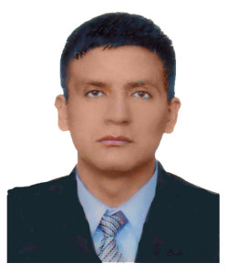
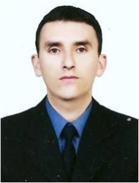

MISIÓN
La Universidad Nacional de San Agustín es una institución dedicada a la formación integral de académicos y profesionales; con capacidad de investigar, crear y difundir conocimientos; para contribuir a la preservación del medio ambiente, al crecimiento y el desarrollo social, en condiciones de equidad, seguridad y justicia.

VISIÓN
Ser una Universidad altamente creativa e innovadora, que practica la democracia y es participativa. Es de valoración y prestigio nacional e internacional, paradigma de difusión y creación de conocimientos. Estrechamente vinculada con su medio; forjadora de ciudadanos y profesionales de alta competencia; promotora de pensamiento crítico, generadora y plataforma de saber científico y tecnológico de la sociedad futura.
...
Previous
Next
DOCENTES
Carmen Gonzáles Gutierrez
Docencia: Unidad de Capacitación, Producción y Servicios FIPS – EPIE 2004 a la fecha CPCC. Carmen Gonzáles Gutiérrez: carmen_americaSuperior: Título Profesional Contador Público Universidad Nacional de San Agustin Maestria en Docencia Universitaria y Gestión Educativa Universidad Nacional de San Agustin Otros Estudios: CONTABILIDAD COMPUTARIZADA CIDE: Computación e Informática para el Desarrollo Empresarial CONTABILIDAD GUBERNAMENTAL Colegio de Contadores Públicos de Arequipa INFORMÁTICA BÁSICA Universidad Nacional de San Agustin PROGRAMACIÓN VISUAL FOX PRO Universidad Nacional de San Agustinh
ING. Erick Fernando Gutierrez
Ing. Erik Fernandez Gutierrez: erikSuperior: Título Profesional de Ingenierío ElectrónicoEscuela Profesional de Ingeniería Electrónica Universidad Nacional de San Agustín Otros Estudios: ENSAMBLAJE DE COMPUTADORAS Instituto de Investigación y Desarrollo de Ingeniería Electrónica (IIDIE) Universidad Nacional de San Agustín REPARACIÓN DE COMPUTADORAS Instituto de Investigación y Desarrollo de Ingeniería Electrónica (IIDIE) Universidad Nacional de San Agustin CAPACITACIÓN ENREDES Y CABLEADO ESTRUCTURADO Y PRODUCTOS 3COM Empresa OPUS TECH S.A y Empresa M.M. Técnica S.A

ING. Freddy Gonzáles Saji
Ing Freddy Gonzales Saji: freddySuperior: Universidad Nacional de San Agustín Facultad de Producción y Servicios Escuela Profesional de Ingenieria de Sistemas Otros Estudios: Universidad Nacional de San Agustin Maestria en Ingenieria de Sistemas Mención: INGENIERIA DE SOFTWARE Docencia: Unidad de Capacitación, Producción y Servicios FIPS – EPIE 2005 a la fecha
Gonzalo Miguel Viscarra Zorrilla
CPCC. Gonzalo Miguel Vizcarra gonzalo_vizcarraSuperior: Universidad Nacional de San Agustín Facultad de Ciencias Contables y Administrativas (1987-1993) Títulos Obtenidos y Tesis de Graduación: POSTGRADO Derecho Empresarial Universidad Católica de Santa María (2000) GRADO DE BACHILLER Universidad Nacional de San Agustin (1993) MAESTRIA EN DOCENCIA UNIVERSITARIA Y GESTIÓN EDUCATIVA Universidad Alas Peruanas Abril 2006 a la fecha Docencia: Unidad de Capacitación, Producción y Servicios FIPS- EPIE Abril 1999 a la fecha
Greta Roxana Bejarano Zuñiga
CPCC. Greta Roxana Bejarano Zúñiga: roxanitaSuperior: UNIVERSIDAD CATOLICA SANTA MARIA Programa Profesional de Trabajo Social Arequipa, año 1982 UNIVERSIDAD CATOLICA SANTA MARIA Facultad de Ciencias Contables e Informática TITULO: Contadora Pública Colegiada Arequipa, año 1986 a 1990 Otros Estudios: ITSPAE Secretariado Gerencial Arequipa, año 1982 UNIVERSIDAD NACIONAL DE SAN AGUSTIN Curso de Ofimática, conocimiento de Word, Excel, Paquetes Contables, PDT, Internet Docencia: Unidad de Capacitación, Producción y Servicios FIPS – EPIE 2004 a la fecha

ING. Johann Bedoya Bardacher
Ing. Johann Bedoya Brandacher: johannSuperior: Prof. Computacion e Informatica Bachiller Ingenieria de SistemasOtros Estudios: Docencia: Facultad de Ingenieria, Produccion y Servicios Unidad de Capacitación, Producción y Servicios 2010 a la fecha